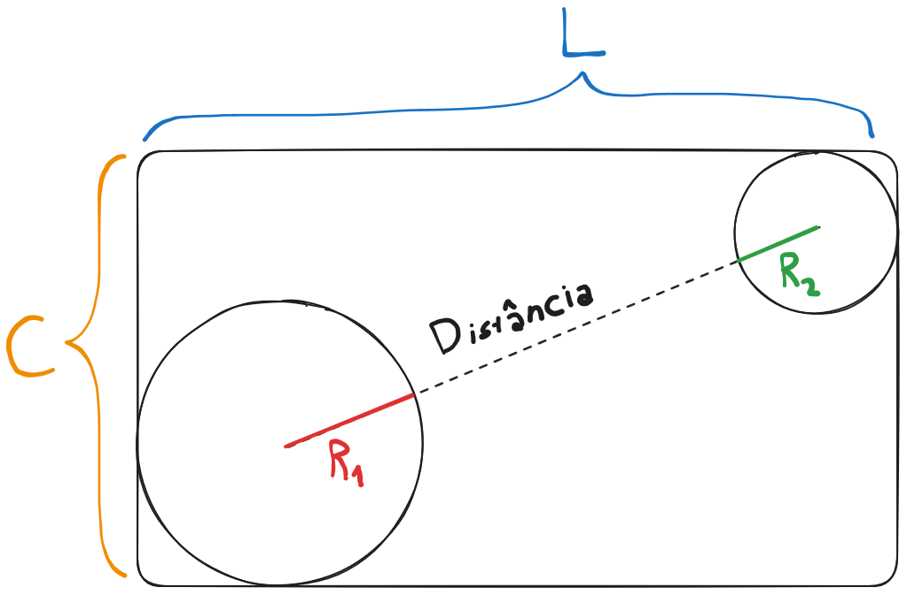

beecrowd 1124 · encaixe de círculos
Elevador
Verificar se duas pessoas, modeladas como círculos, cabem simultaneamente no piso retangular do elevador.
A melhor disposição
Para maximizar o espaço entre os centros, colocamos os círculos em cantos opostos.
Os centros ficam em (R₁, R₁) e (L - R₂, C - R₂).
- O primeiro círculo cabe:
2R₁ ≤ Le2R₁ ≤ C. - O segundo círculo cabe:
2R₂ ≤ Le2R₂ ≤ C. - Eles não se sobrepõem: a distância entre centros é pelo menos
R₁ + R₂.

Um detalhe importante
As condições usam ≤, não <. Um círculo cujo diâmetro é exatamente igual à largura
ou ao comprimento cabe por tangência. O código original já implementava isso corretamente ao rejeitar apenas quando
L < 2R ou C < 2R.
(L - R₁ - R₂)² + (C - R₁ - R₂)² ≥ (R₁ + R₂)²
Teste das três condições
Distância²
(R₁ + R₂)²
Saídatodos os testes precisam passar
O círculo R₁ cabe sozinho
O círculo R₂ cabe sozinho
Os círculos não se sobrepõem
Ordem do algoritmo
Primeiro verificamos os diâmetros. Só depois comparamos a separação dos centros.
A comparação ao quadrado evita sqrt e mantém todos os cálculos inteiros.
Teste centralAbrir 1124.py
import sys
def circulos_cabem(largura, comprimento, raio_1, raio_2):
# Cada círculo precisa caber sozinho no retângulo.
if (2 * raio_1 > largura or 2 * raio_1 > comprimento or
2 * raio_2 > largura or 2 * raio_2 > comprimento):
return False
# Cantos opostos maximizam a distância entre os centros.
dx = largura - raio_1 - raio_2
dy = comprimento - raio_1 - raio_2
distancia_ao_quadrado = dx * dx + dy * dy
raios_ao_quadrado = (raio_1 + raio_2) ** 2
return distancia_ao_quadrado >= raios_ao_quadrado
def main():
valores = list(map(int, sys.stdin.buffer.read().split()))
respostas = []
for i in range(0, len(valores), 4):
largura, comprimento, raio_1, raio_2 = valores[i:i + 4]
# O caso 0 0 0 0 é apenas o sentinela de encerramento.
if largura == comprimento == raio_1 == raio_2 == 0:
break
resposta = circulos_cabem(largura, comprimento, raio_1, raio_2)
respostas.append("S" if resposta else "N")
sys.stdout.write("\n".join(respostas) + "\n")
if __name__ == "__main__":
main()Fontes e validação
- Explicação e soluções originais — disposição em cantos opostos e implementação de referência.
- Enunciado no beecrowd — formato oficial do problema.
- Documentação do módulo math — definição da norma euclidiana usada na distância.